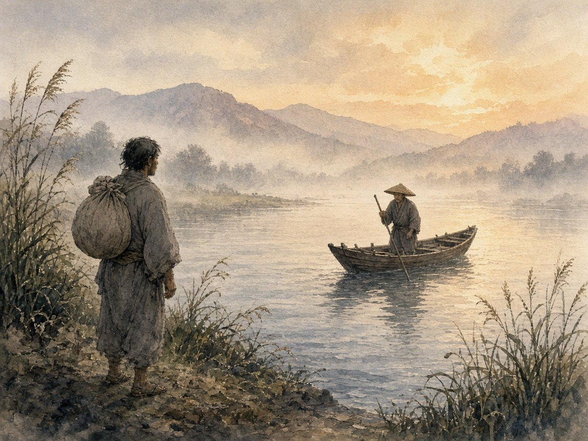

第17回渡りに船（わたりにふね）― 法華経の十二のたとえ
配信日
🔊 読み上げで聴く
出典『妙法蓮華経』薬王菩薩本事品第二十三

「渡りに船」という言葉は、困っているところにちょうどよい助けが来ることをいいますね。じつはこの言葉のもとは、法華経の薬王菩薩本事品（やくおうぼさつほんじほん）にあるといわれています。お釈迦さまは宿王華菩薩（しゅくおうけぼさつ）に向かって、このお経が人々を救うはたらきを、十二のたとえを連ねて説かれました。
「如清涼池 能満一切諸渇乏者 如寒者得火 如裸者得衣 如商人得主 如子得母 如渡得船 如病得医 如暗得灯 如貧得宝 如民得王 如賈客得海 如炬除暗 此法華経亦復如是」（清涼池の能く一切の諸の渇乏の者に満つるが如く、寒き者の火を得たるが如く、裸なる者の衣を得たるが如く、商人の主を得たるが如く、子の母を得たるが如く、渡りに船を得たるが如く、病に医を得たるが如く、暗に灯を得たるが如く、貧しきに宝を得たるが如く、民の王を得たるが如く、賈客の海を得たるが如く、炬の暗を除くが如く、此の法華経も亦復是の如し） 出典 『妙法蓮華経』薬王菩薩本事品第二十三
どのたとえも、本当に困っているときに、いちばん欲しいものが手に入る喜びです。寒さにふるえる人にとっての火、川の前で立ちどまった人にとっての船。法華経とお題目は、遠くにある立派な教えというより、そういう「いま必要な助け」としていただくものだ、と説かれているのです。
ただ、船は乗らなければ向こう岸へは運んでくれません。目の前に来た船を見送っていては、いつまでも岸に立ったままです。お題目も同じで、口にお唱えしてこそ、そのはたらきをいただけます。また、わたしたち自身が、だれかにとっての「渡りの船」になれることもあります。困っている人にそっと手を差しのべることも、法華経の心にかなう行いでしょう。